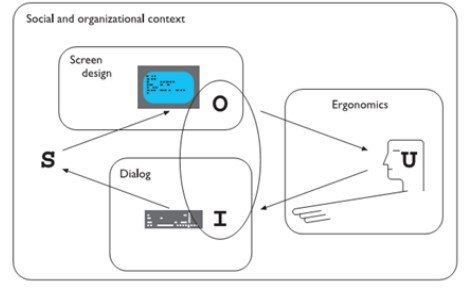
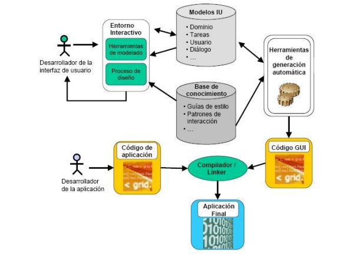

Interaccion Humano Ordenador

ERGONOMÍA
Puede definirse la ergonomía como el grupo de disciplinas que se interesan por el estudio de un equilibrio saludable entre las condiciones externas e internas ligadas al trabajo (actividad) en su interacción con la biología humana. Tal equilibrio no busca otra cosa que la adaptación, adecuación fisiológica del binomio hombre-trabajo, en una proporción de respeto. La Ergonomía también se puede definir como la administración de los recursos biológicos en su interacción con el medio. Factor ergonómico se remite a cualquier elemento capaz de influir o condicionar el mecanismo de interacción hombre- máquina- entorno. Tales factores pueden ser de diversos tipos orgánicos, psicológicos, sociales, culturales, físicos, ambientales. (Jouvencel, 2010)
DESCRIPCIÓN DEL ENFOQUE BASADO EN MODELOS
El desarrollo de Interfaces de Usuario (en adelante IUs) basado en modelos, soportado en lo que comúnmente se conoce como MB-UIDE(Del inglés Model-Based User Interface Development Environment.) consiste en un mecanismo para diseñar y desarrollar IUs a partir de especificaciones a un alto nivel de abstracción (utilizando modelos declarativos) y su posterior explotación hasta la obtención de las distintas IUs requeridas a cada momento, en función de la información contextual que dichos modelos describen. Los modelos declarativos describen, representan y formalizan explícitamente no solo los aspectos estáticos y dinámicos de la IU, sino también otro tipo de facetas, artefactos y factores relevantes involucrados en el desarrollo de una IU, entre los cuales se encuentran los diferentes requisitos de cada contexto de uso, es decir, la información contextual a tener en cuenta en la generación de la IU.

PROCESO DE DISEÑO
La arquitectura general dentro del diseño de IUs basado en modelos aparece reflejada en la figura siguiente. En primer lugar, el desarrollador de la IU formaliza los distintos aspectos de la IU aplicando un proceso de diseño y utilizando una herramienta de modelado. Las herramientas de modelado suelen ser herramientas visuales donde el usuario hace uso de una notación gráfica que permite la especificación de los distintos aspectos de manera sencilla integrada en un entorno interactivo. Como resultado se obtienen los distintos modelos declarativos que representan el conocimiento que se tiene de la IU. El entorno interactivo de modelado crea y modifica los modelos que representan el conocimiento que se tiene de la IU, haciendo uso durante todo el proceso de una base de conocimiento donde se recopila la experiencia adquirida por los desarrolladores, que puede consistir en guías de estilo (Smith, 1986), (Shneiderman, 1992), (Corporation, 1992), heurísticas y patrones (Montero, 2002), (Montero F. L.-J., 2003), que guiarán la transformación de los modelos en código. Todas estas orientaciones se pueden agrupar e identificar con el nombre de directivas de interacción.
